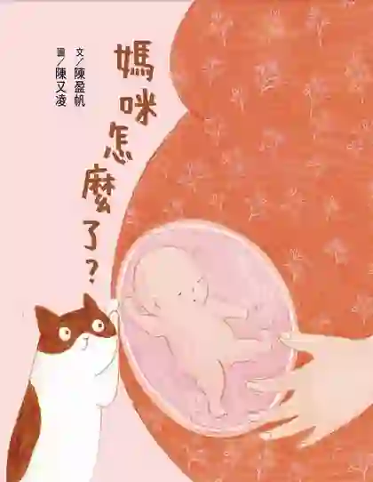
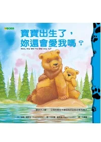
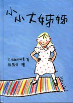
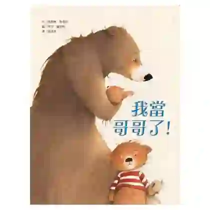
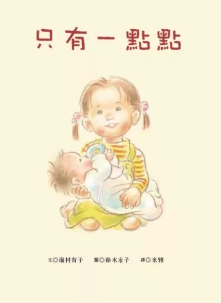
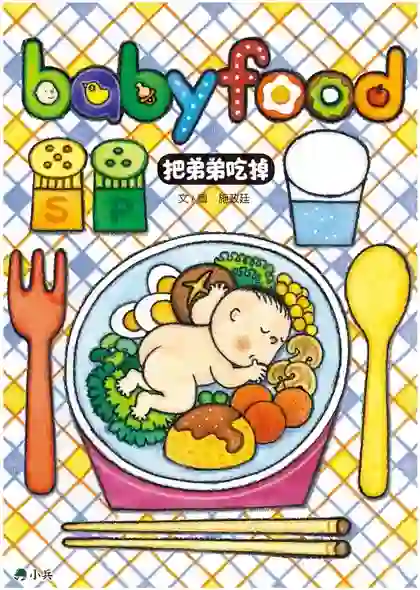
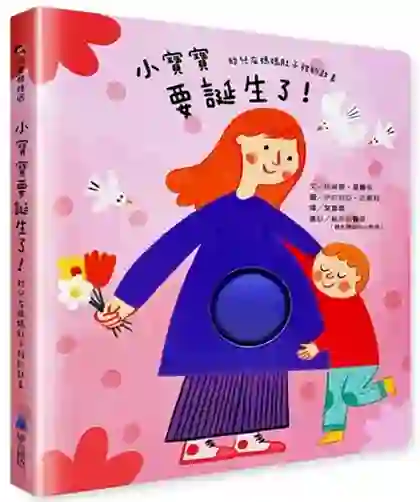
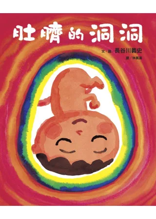
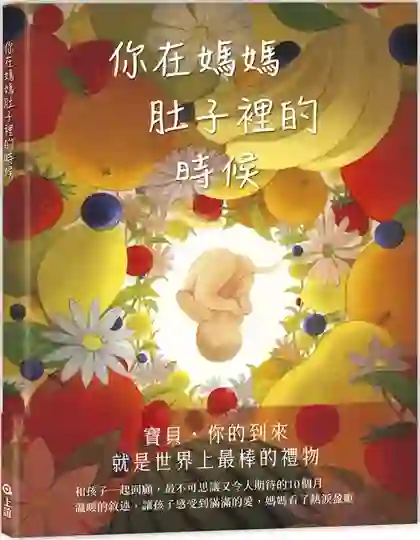
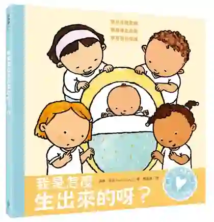

我原本以為，中文的生產繪本大概都把生產畫在醫院裡——白牆、產檯、戴口罩的醫師。我想找的是有沒有例外：有沒有哪一本畫的是在家裡生、有助產師在旁邊。
查完之後，發現我問錯了問題。
不是多數繪本只畫醫院。是多數繪本根本不畫生產。
所有目前買得到的中文繪本，故事都在孕期結束、產後開始——中間那一天，被整本跳過。肚子大了，然後寶寶就在那裡了。
孩子從繪本裡學會了寶寶會來，但沒有學會寶寶怎麼來。
這件事本身就值得寫成一篇文章。但在那之前，先講買得到的那些——因為它們之中有幾本，真的很好。
照孩子現在的狀態挑，不要照書名挑。
「當哥哥好棒」這種書，對一個正在半夜討奶、尿褲子、黏在媽媽腿上的三歲孩子沒有用。他需要的不是被鼓勵，是被承認。
所以下面每一本我都寫了它適合哪一種狀態——孕早期還沒宣布、孕後期在等、產後在退化、或者已經開始說「我不要弟弟」。
一、如果家裡有大寶，正在等二寶
這一區是這份書單的重點。中文繪本在這個主題上其實相當豐富——比「寶寶怎麼出生」豐富得多。我照時間順序排，從還沒宣布，一路排到已經出現敵意。

用家裡的貓當敘事者，看著「媽咪最近很奇怪，一直吃東西，肚子好大」。
適合：孕早中期，還沒正式跟大寶宣布的家庭。它站在孩子的困惑，而不是大人的宣告——大人還沒開口解釋前，孩子其實早就在觀察了。
生產怎麼處理：聚焦孕期，不畫生產。

問答結構：小熊一句句追問「那妳還會愛我嗎」，媽媽一句句回答。
適合：會把不安說出口的大孩子。它把「愛會不會被分掉」這個抽象焦慮攤開來講——但也因此需要孩子有一定的語言能力才接得住。三歲以下可能還跟不上。
生產怎麼處理：不畫，只到「媽媽要生小寶寶了」為止。

時間跨度最長的一本。從媽媽懷孕的期待，到寶寶出生後「他根本不會陪我玩」的失望與嫉妒，再到弟弟長大後崇拜姊姊的驕傲。
適合：想一次講完整條情緒曲線的家庭。別的書停在「接納」，它一路畫到手足互動的日常反覆——搶玩具、打架、和好、再搶。它沒有假裝有一個「從此以後」。
生產怎麼處理：未見生產場景（推測跳過）。

小熊發現爸媽被瓜分，孤單、被忽略，直到他伸手摸了寶寶的臉，寶寶回應了他。
它的轉折點放在身體接觸，而不是說理——這是它跟其他幾本最大的差別。對還沒辦法用語言處理情緒的孩子，這個路徑往往更有效。
生產怎麼處理：不畫。

唯一一本主場景在產後的書。媽媽忙著抱新生兒，小娜自己換衣服、自己綁頭髮、自己倒牛奶——每一件事都只成功「一點點」。
它不勸孩子懂事，而是承認「妳正在被迫長大」。
適合：大寶已經出現退化行為（討奶、尿褲子、特別黏人）的家庭。這時候比任何一本「當哥哥好棒」都準。
生產怎麼處理：完全不畫，直接跳到產後日常。

姊姊被要求照顧弟弟，弟弟一直哭。她跑去敲大怪獸的門，說：「你去把他吃掉吧。」
這是書單裡唯一正面處理「恨意」的一本。其他書處理的是失落，這本處理的是那個更難說出口的東西。
適合：已經出現打人、推人、說「我不要弟弟」的家庭。它不評價孩子的黑暗念頭，只讓那個念頭走完。孩子需要的往往不是被糾正，是被允許先有那個感覺。
生產怎麼處理：跳過，故事從弟弟已經出生開始。
三本經典，目前買不到
手足題材最常被推薦的三本經典，現在正在集體絕版。我還是列出來，因為圖書館幾乎都有。
手足繪本的原型：彼得的東西被一件件漆成粉紅色給妹妹。讀冊生活尚有二手。
博客來目前只剩簡體版。
用超現實的畫面畫出「家裡有什麼在改變」的不安。讀冊生活尚有。
二、寶寶是怎麼來的
這一區買得到的書比想像中多，但它們幾乎都停在孕期。我照孩子的年齡由小到大排。

書單裡唯一給 0–3 歲的一本。有特殊的「肚肚」立體翻頁，孩子能用手摸出孕肚的變化——不靠文字，靠觸覺。經醫師審訂。
生產怎麼處理：以胎兒成長為主軸，生產著墨少（推測）。

這本橫跨兩區，也是我最想推薦的一本。
敘事者是臨盆前的胎兒，從肚臍的洞洞往外看：姊姊在畫圖、哥哥在摺紙、爸爸在做嬰兒床、媽媽在縫小衣服。
孩子看到的是「全家都在等他」；而大寶同時看到的是「我也是這場準備的一員」。它不需要說一句「你要當哥哥了喔」，就把大寶放進了故事裡。
生產怎麼處理：主體是出生前的醞釀，出生放在結尾。沒有醫院場景、沒有醫療器械——是家庭場域。但也沒有出現助產師。

目前市面上孕期敘事最完整、也最新的一本：從受精卵 0.1 毫米開始，用草莓、檸檬、南瓜、西瓜比喻每個月的大小。
適合：想把「十個月」講清楚、但還不想涉入性行為話題的家庭。
生產怎麼處理：重心在孕期，出生僅收尾（推測）。未見助產師或生產場景。
日本的性教育經典。它不只講身體構造，更把個人界線、自我保護、尊重生命綁在一起講——「小嬰兒是從哪裡來的？」只是其中一節。
適合：想把身體教育當成一整套來做，而不是只回答一個問題的家庭。
生產怎麼處理：有回答「小嬰兒從哪裡來」，具體畫面未查證（推測含分娩示意圖）。

最直白的一本。卵子精子、性行為、懷孕、生產，一路問答到底，連「醫生怎麼知道寶寶是男是女」都寫進去。
適合：已經被孩子問到閃避不了的家庭。
生產怎麼處理：是這一區唯一明確表示會講到生產的一本（書介明言「一起來了解懷孕和生產的祕密」）。是否為醫院場景、有無畫出疼痛，我未親見內頁，不下判斷。
兩本可惜的絕版
三億個精子的游泳比賽。台灣最多人知道的一本，但生產完全跳過。
哥哥小慶陪媽媽度過整個孕期，最後媽媽生下雙胞胎。是「陪大寶」與「講出生」合一的好書——這一類目前找不到替代品。
四個空白
這是這次查證裡最讓我意外的部分。以下不是「我沒找到」，是實際查詢後確認沒有。
前兩個空白我不意外——居家生產在台灣本來就少，出版社不會為一個小眾市場做書。
但剖腹產不是小眾。它是三成。
那意味著：一個剖腹產出生的孩子，翻遍中文繪本區，找不到一本書裡的寶寶是像他那樣出生的。他會讀到肚子變大、讀到寶寶來了，中間那段跟他有關的、真正發生過的事，沒有人畫。
我心疼那些剖腹產的媽媽——很多人本來就在為那道疤、為「沒有自己生出來」而難受。而她的孩子，連一本可以指著說「你是這樣來的」的書都沒有。
如果只能買兩本
情境：家裡有一個 3 歲的大寶，二寶快來了。
《肚臍的洞洞》＋《只有一點點》。
《肚臍的洞洞》管出生前。三歲聽不懂「愛不會變少」這種抽象保證，但看得懂「全家都在做嬰兒床、都在等他」的畫面。它讓大寶從旁觀者變成準備隊的一員，而且完全不需要進入醫療語彙。
《只有一點點》管出生後。三歲是退化行為的高峰期，而二寶落地後的頭三個月才是真正的難關。這本承認「媽媽真的變忙了、妳真的辛苦了」，最後媽媽仍然抱住她——不用講道理，三歲就懂。
兩本都不倚賴語言理解，靠畫面和身體感。一本孕期、一本產後，剛好接住整段過渡。
如果預算還有第三本——等大寶開始出現敵意行為的時候，再加《把弟弟吃掉》。不用一開始就買，那本是留給真的走到那一步的時候用的。
大寶要不要在場？
這是很多二胎家庭會問的問題，而它沒有標準答案——取決於孩子的年齡、生產地點，以及現場有沒有一個專門照顧他的大人。《生產方式選擇手冊》裡有一節在談生產隊友怎麼安排。免費線上閱讀。
翻開手冊 →常見問題
家裡有 3 歲大寶正在準備二寶，只能買兩本該買哪兩本？
《肚臍的洞洞》加《只有一點點》。前者管出生前——3 歲聽不懂「愛不會變少」這種抽象保證，但看得懂「全家都在做嬰兒床、都在等他」的畫面，它讓大寶從旁觀者變成準備隊的一員。後者管出生後——3 歲是退化行為的高峰期，二寶落地後的頭三個月才是真正的難關，這本承認「媽媽真的變忙了、你真的辛苦了」。兩本都不倚賴語言理解，靠畫面和身體感。
有沒有繪本畫居家生產或助產師？
查無。經博客來繁體中文童書區以「助產」「產婆」「接生」「居家生產」等關鍵字查詢（2026 年 8 月），沒有任何一本繪本以居家生產、助產師或生產中心為主題。搜尋「助產」的結果全部是護理國考參考書；「產婆」只出現學術專書，不是繪本。
有沒有繪本告訴剖腹產出生的孩子他是怎麼來的？
查無。台灣的剖腹產率長期在三成上下，也就是每十個孩子就有三個是這樣出生的，但目前查不到任何一本繁體中文繪本正面講述剖腹產的故事。這是本次查證中最讓人意外的空白之一。
大寶已經出現打人、說「我不要弟弟」怎麼辦？
可以看看施政廷的《把弟弟吃掉》。多數手足繪本處理的是「失落」，這本處理的是「恨意」——姊姊被要求照顧一直哭的弟弟，於是跑去敲大怪獸的門說「你去把他吃掉吧」。它不評價孩子的黑暗念頭，只讓那個念頭走完。孩子需要的往往不是被糾正，而是被允許先有那個感覺。
要什麼時候開始跟大寶講？
這份書單裡的書覆蓋了不同時間點，可以照孩子的狀態挑。孕早中期、還沒正式宣布時，《媽咪怎麼了》站在孩子的困惑而不是大人的宣告——大人還沒開口，孩子其實已經在觀察了。孕期中後段可以讀《肚臍的洞洞》讓大寶成為準備隊的一員。產後那幾個月最難，那時候《只有一點點》比任何「當哥哥好棒」的書都準。
經典的手足繪本還買得到嗎？
有幾本已經絕版。艾茲拉‧傑克‧季茲的《彼得的椅子》、《你們都是我的最愛》、安東尼‧布朗的《小凱的家不一樣了》，在博客來繁體中文書區都已查無，只能在圖書館或二手市場（讀冊生活、蝦皮）尋找。這三本是手足題材最常被推薦的經典，目前正在集體絕版。
我想找人一起想「大寶怎麼安排」。
二胎的準備跟頭胎不一樣——妳要同時照顧一個還沒出生的、和一個正在害怕失去妳的。這件事沒有一本書能全部回答。看溫柔生產陪產服務，或直接跟我聊聊。另外兩份書單：〈溫柔生產書單（中／英／日）〉、〈多元生產方式：12 種選擇的簡單介紹〉。
這份書單是怎麼查的。2026 年 8 月 9 日，以博客來（books.com.tw）中文書搜尋頁與商品頁為主要來源，取商品頁的 ISBN、出版社、出版日與庫存狀態；博客來查無者以 TAAZE 讀冊生活補查。書封圖片取自博客來，用於辨識所介紹的書籍，版權屬各該出版社與作者所有。
誠實說明兩件事。第一，多數書的繪者資訊博客來的資料欄位並未提供，因此本文多數只列作者。第二，「它怎麼處理生產」這一欄，我依據的是書介與書名，並未親見每一本的內頁——凡屬判斷而非確認者，都標了「推測」。如果妳讀過其中某一本、發現我寫錯了，歡迎告訴我，我會更新。
「查無」的意思。指經上述通路以指定關鍵字查詢後沒有結果，不代表世界上不存在。書市資料庫並非全知——若妳知道有我漏掉的書，尤其是畫居家生產、助產師或剖腹產的中文繪本，請務必告訴我。那正是我最想找到的。
本文為書目整理，各書內容的觀點屬於各該作者。剖腹產率數字為台灣長期趨勢的概略描述，正式數據請參考衛福部統計。